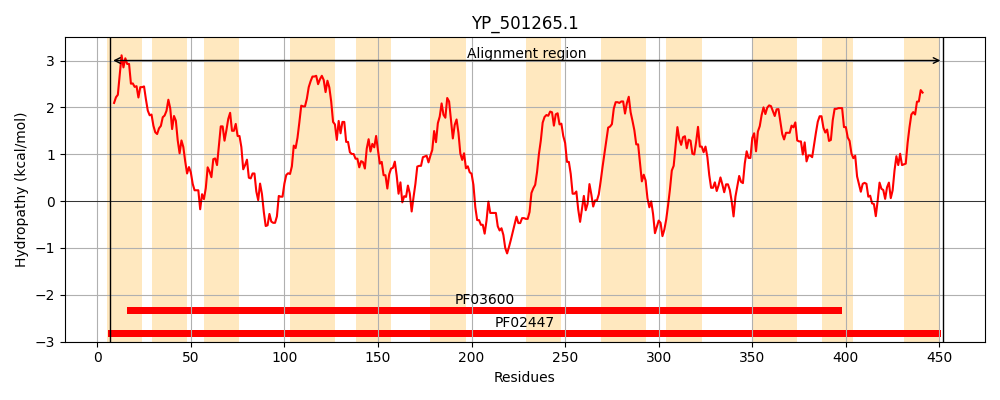
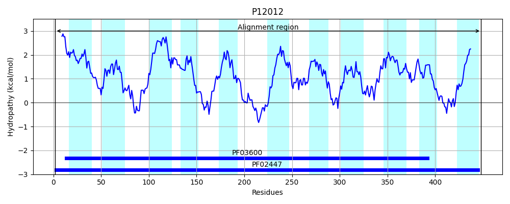
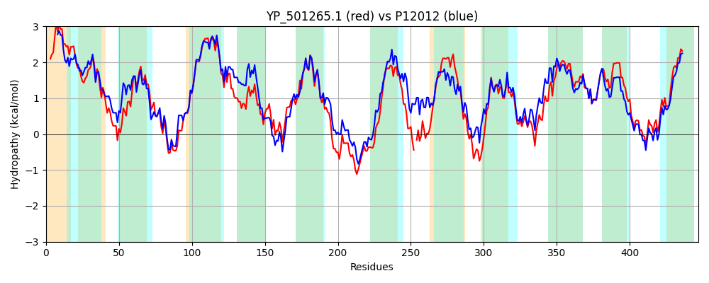

Hit Accession: P12012
Hit TCID: 2.A.8.1.1
Hit Description: gnl|BL_ORD_ID|9054 gnl|TC-DB|P12012|2.A.8.1.1 GLUCONATE PERMEASE - Bacillus subtilis.
Mach Len: 447
e:0.000000
Query TMS Count : 12
Hit TMS Count: 11
TMS-Overlap Score: 11.200000
Predicted Substrates:CHEBI:24265;gluconate
BLAST Alignment:
Score: 1447 , Bit scores: 561 bits, E-value: 0.0e+00, Alignment length: 447, Percentage identity: 63
Query: 7 PLISVVLGIVILLVLIIGFKLNTFISLIITSMITALMLGIPLTKIMETIEKGMGSTLGHIALIFGLGAILGKLLADGGGATRIADTLIQKFGQKHVQWAMLVAAFIVGIALFFEVGLVLLIPLVFTVAKRANVSVLKLGLPMVTALSVTHGFLPPHPGPVVIAKELKANVGDVLLYGMIIAIPVTLIAGPIFNKVAQKMIPSAYTREGDISALGAQKEFTDQEMPGFGMSLLTATLPVILMLVSTITQLVTGH-DKPTNLFESIIYMIGTAGTAMLIAVLFAIVTMGLMRKRKMNHIMESVTNAIYPIGMMLLIIGGGGTFKQVLIDGGVGNTIAKMFEGTEMSPILLAWIVAAVLRIALGSATVAAISTTGIVLPLLQSSDVNVALVVLAIGAGSVILSHVNDAGFWMFKEYFGLTVKETFLTWSLLETIISVSGIIFILFISLFV 452
PLI V LGI+ LL LI+G KLNTFISL++ S AL LG+P K++ +IE G+G TLGHIALIFGLGA+LGKL+AD GGA RIA TL+ KFG+K++QWA+++A+FI+GIALFFEVGLVLLIP+VF +++ +S+L LG+PMV ALSVTHGFLPPHPGP IA E AN+G+VLLYG I+A+P LIAGP+F K A+K++P+++ + G+I++LG QK F +E PGFG+S+ TA LP+I+M V+TI L+ N + I +IG A TAM+I++L A+ TMG+ R + +M+S + AI IGMMLLIIGGGG FKQVLI+GGVG+ +A +F+GT +SPI+LAW++AA+LRI+LGSATVAA+STTG+V+PLL SDVN+ALVVLA GAGSVI SHVNDAGFWMFKEYFGL++KETF TW+LLETIISV+G+ FIL +SL V
Sbjct: 2 PLIIVALGILALLFLIMGLKLNTFISLLVVSFGVALALGMPFDKVVSSIEAGIGGTLGHIALIFGLGAMLGKLIADSGGAQRIAMTLVNKFGEKNIQWAVVIASFIIGIALFFEVGLVLLIPIVFAISRELKISILFLGIPMVAALSVTHGFLPPHPGPTAIAGEYGANIGEVLLYGFIVAVPTVLIAGPLFTKFAKKIVPASFAKNGNIASLGTQKTFNLEETPGFGISVFTAMLPIIIMSVATIIDLLQETIGFADNGVLAFIRLIGNASTAMIISLLVAVYTMGIKRNIPVKTVMDSCSTAISQIGMMLLIIGGGGAFKQVLINGGVGDYVADLFKGTALSPIILAWLIAAILRISLGSATVAALSTTGLVIPLLGHSDVNLALVVLATGAGSVIASHVNDAGFWMFKEYFGLSMKETFATWTLLETIISVAGLGFILLLSLVV 448 | Protein Hydropathy Plots: |
|---|
|  |  |
Pairwise Alignment-Hydropathy Plot:
|
|---|
|  |